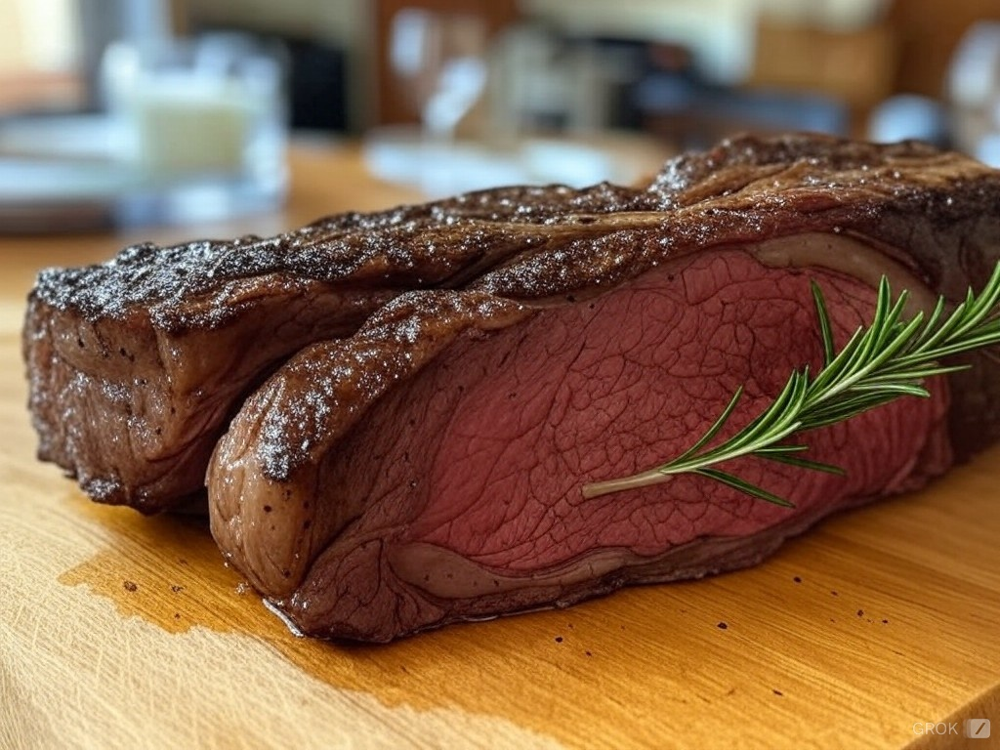

Chef John's Perfect Prime Rib

John Mitzewich's ultimate meat feast
A simple guide to cooking succulent and tasty prime rib every time.
Ingredients
- 1 (4 pound) bone-in prime rib roast (room temperature)
- ¼ cup unsalted butter, softened
- 1 tablespoon freshly ground black pepper
- 1 teaspoon herbes de Provence
- kosher salt to taste
Steps
- Place prime rib roast on a plate and bring to room temperature, 2 to 4 hours. Preheat the oven to 500 degrees F (260 degrees C).
- Combine butter, pepper, and herbes de Provence in a bowl; mix until well blended. Spread butter mixture evenly over entire roast. Season roast generously with kosher salt.
- Roast the 4-pound roast in the preheated oven for 20 minutes. (If your roast is larger or smaller than 4 pounds, multiply the exact weight times 5 minutes.)
- Turn the oven off and, leaving the roast in the oven with the door closed, let the roast sit in the oven for 2 hours.
- Remove roast from the oven, slice, and serve.